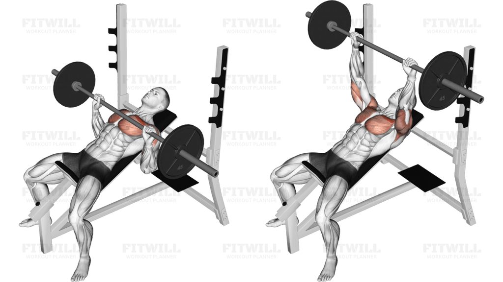

3 – Day Split Workout Plan for building lean muscle mass
- Goal: building muscle
- Technical complexity: medium
- Duration: 60 minutes
- 3 times a week
Why 3 – day split workout plan?
If the main reason you work out is to achieve muscle gain, your choice at least should be 3-day split workout plan. To get your muscles growing, you need to do high volume of sets and reps focussing on one particular muscle group during one exercise session. By splitting your body’s muscles in three to five parts, you can put in a high number of sets and reps per muscle group, enough to give them stimulus to grow.
In this article we focus on the 3 day split plan, assuming that you have time to hit the gym three times a week. If you can workout four or five days a week, check out Super Gains 6 month plan in our website
So, are you ready to be beloved like this!
Gear up!
This plan can be quite effective, especially for people who works everyday, since it allows for plenty of recovery time for the various muscle groups. You will mostly only be working out a specific muscle group once a week, so that leaves around 7 days of recovery for that muscle group. So, it is a great choice for you to start build up your muscles comfortably.
So, are you ready to be a beast!
Day 1: Moderate volume and intensity
10 minutes for warming up
4 sets, 6-8 reps (1 minute rest)
4 sets, 6-8 reps (2 minute rest)
4 sets, 6-8 reps (1 minute rest)
4 sets, 8-10 reps (2 minute rest)

4 sets, 20-30 reps (no rest)
4 sets, 8-10 reps (1 minute rest)
Advantages
- Improved cardiovascular health
- Reduced risk of injury due to cushioned surface
- Ability to control and customize workout intensity
- Convenient and consistent exercise environment
- Safe running option regardless of weather conditions
- Enhanced joint health with lower impact compared to outdoor running
- Opportunity to practice race pacing and fueling strategies
- Improved running form and technique
- Increased calorie burn and weight loss
- Better mental health and mood improvement
- Ability to multitask, such as watching TV or listening to music
- Tracking progress with built-in monitors and apps
- Reduced exposure to outdoor pollutants and allergens
- Increases overall leg strength
- Enhances core stability
- Improves balance and coordination
- Boosts athletic performance
- Promotes muscle growth in the lower body
- Burns a significant amount of calories
- Improves mobility and flexibility
- Strengthens joints and ligaments
- Enhances hormone production
- Reduces the risk of injuries
- Improves posture
- Increases vertical jump height
- Boosts confidence
- Supports functional movements
- Increases upper body strength, particularly in the biceps and back muscles
- Improves grip strength
- Enhances muscle definition and tone
- Promotes better posture
- Reduces the risk of upper back pain and shoulder injuries
- Boosts core stability and strength
- Requires minimal equipment and can be done almost anywhere
- Helps in building functional strength for everyday activities
- Improves overall body coordination and control
- Can be easily modified to increase difficulty by adding weights
- Supports cardiovascular health by engaging multiple muscle groups
- Contributes to a balanced workout routine
- Helps in burning calories and managing weight
- Targets multiple muscle groups including shoulders, triceps, and upper back
- Improves upper body strength and power
- Increases shoulder stability and mobility
- Enhances core strength and stability
- Helps improve posture and overall body alignment
- Can be modified for different fitness levels and goals
- Promotes better muscle coordination and balance
- Reduces the risk of shoulder injuries by strengthening the shoulder girdle
- Improves functional strength for everyday activities
- Boosts metabolic rate and aids in weight management
- Requires minimal equipment and can be done almost anywhere
- Enhances athletic performance by building explosive strength
- Strengthens the hamstrings, glutes, and lower back muscles
- Improves hip mobility and flexibility
- Helps to prevent lower back pain and injury
- Increases overall stability and balance
- Enhances muscle hypertrophy, particularly in the posterior chain
- Improves performance in Olympic weightlifting movements
- Increases deadlift performance by targeting specific muscle groups
- Enhances hip, hamstring, and lower back performance
- Promotes better posture and spinal alignment
- Can be modified for different fitness levels and goals
- Supports cardiovascular health by engaging multiple muscle groups
- Provides a functional strength workout for everyday activities
- Boosts metabolic rate and aids in weight management
- Offers variations to keep workouts interesting and challenging
- Strengthens core muscles
- Improves muscle mass
- Enhances athletic performance
- Boosts balance and stability
- Increases flexibility
- Improves posture
- Reduces risk of back pain and injuries
- Supports better circulation
- Relieves tension and tightness
- Boosts energy levels
- Reduces stress
- Enhances concentration
- Promotes better digestion
- Helps in weight management
- Reduces strain on the wrists
- Improves grip strength
- Targets biceps muscles effectively
- Promotes balanced muscle development
- Increases biceps size and strength
- Enhances forearm strength
- Supports better wrist positioning
- Reduces risk of wrist injuries
- Improves overall upper body strength
- Allows for varied grip positions
- Enhances muscle endurance
- Improves lifting performance
- Reduces elbow strain
- Supports better muscle isolation
Day 2: High intensity
10 minutes for warming up
4 sets, 3-6 reps (2 minutes rest)
5 sets, 3-5 reps (90 seconds rest)
5 sets, 5 reps (2 minutes rest)
5 sets, 3-5 reps (90 seconds rest)
5 sets, 5 reps (2 minutes rest)
4 sets, 10-15 reps (2 minutes rest)
Advantages
- Improved cardiovascular health
- Reduced risk of injury due to cushioned surface
- Ability to control and customize workout intensity
- Convenient and consistent exercise environment
- Safe running option regardless of weather conditions
- Enhanced joint health with lower impact compared to outdoor running
- Opportunity to practice race pacing and fueling strategies
- Improved running form and technique
- Increased calorie burn and weight loss
- Better mental health and mood improvement
- Ability to multitask, such as watching TV or listening to music
- Tracking progress with built-in monitors and apps
- Reduced exposure to outdoor pollutants and allergens
- Enhances explosive power
- Improves overall strength
- Builds muscle mass
- Increases speed and agility
- Strengthens the posterior chain
- Improves coordination and balance
- Enhances athletic performance
- Supports better posture
- Reduces risk of injuries
- Improves deadlift performance
- Boosts metabolic rate
- Increases cardiovascular health
- Promotes better flexibility
- Strengthens ligaments and tendons
- Improves core strength
- Enhances quad development
- Reduces lumbar and knee stress
- Boosts overall leg strength
- Improves posture
- Increases mobility in hips, ankles, and shoulders
- Promotes better balance and stability
- Helps in improving performance in other lifts like back squats
- Reduces risk of lower back injuries
- Enhances athletic performance, including sprinting and jumping
- Encourages proper squat form and technique
- Engages the upper back and shoulders
- Can be performed with lighter weights while still being effective
- Improves wrist and finger flexibility (when using clean grip)
- Targets multiple muscle groups including the back, shoulders, and arms
- Improves posture and spinal stability
- Increases overall strength and muscle mass
- Can be modified for different fitness levels and goals
- Helps to prevent injury by strengthening the muscles that support the spine
- Enhances grip strength
- Improves core stability and strength
- Boosts athletic performance
- Promotes better muscle coordination
- Supports better overall body mechanics
- Increases calorie burn due to the compound nature of the exercise
- Improves balance and coordination
- Increases upper body strength
- Enhances muscle hypertrophy in the chest, shoulders, and triceps
- Improves pushing power and performance
- Strengthens the pectoral muscles, leading to a well-defined chest
- Boosts overall upper body muscle mass
- Enhances bone density and joint health
- Improves athletic performance in sports requiring upper body strength
- Engages multiple muscle groups, making it an efficient compound exercise
- Supports better posture and shoulder stability
- Increases calorie burn due to the compound nature of the exercise
- Helps in muscle coordination and balance
- Promotes better overall body mechanics
- Strengthens the hamstrings, glutes, and lower back muscles
- Improves hip mobility and flexibility
- Helps to prevent lower back pain and injury
- Increases overall stability and balance
- Enhances muscle hypertrophy, particularly in the posterior chain
- Improves performance in Olympic weightlifting movements
- Increases deadlift performance by targeting specific muscle groups
- Enhances hip, hamstring, and lower back performance
- Promotes better posture and spinal alignment
- Can be modified for different fitness levels and goals
- Supports cardiovascular health by engaging multiple muscle groups
- Provides a functional strength workout for everyday activities
- Boosts metabolic rate and aids in weight management
- Offers variations to keep workouts interesting and challenging
- Strengthens the core muscles
- Improves hip flexor strength
- Enhances grip strength
- Increases overall core stability
- Improves posture
- Reduces lower back pain
- Boosts athletic performance
- Enhances flexibility in the hips and thighs
- Promotes better muscle coordination
- Increases range of motion in the hips and knees
- Supports better overall body mechanics
- Improves digestion by engaging the abdominal muscles
- Helps in muscle hypertrophy and endurance
- Can be performed with minimal equipment
Day 3: High volume
10 minutes for warming up

4 sets, 12-15 reps (90 seconds rest)

4 sets, max reps (90 seconds rest)
4 sets, 12-15 reps (90 seconds rest)

4 sets, 15-20 reps (90 seconds rest)
4 sets, 12-15 reps (no rest)
4 sets, 12-15 reps (no rest)


Advantages
- Improved cardiovascular health
- Reduced risk of injury due to cushioned surface
- Ability to control and customize workout intensity
- Convenient and consistent exercise environment
- Safe running option regardless of weather conditions
- Enhanced joint health with lower impact compared to outdoor running
- Opportunity to practice race pacing and fueling strategies
- Improved running form and technique
- Increased calorie burn and weight loss
- Better mental health and mood improvement
- Ability to multitask, such as watching TV or listening to music
- Tracking progress with built-in monitors and apps
- Reduced exposure to outdoor pollutants and allergens
- Increases overall leg strength
- Enhances core stability
- Improves balance and coordination
- Boosts athletic performance
- Promotes muscle growth in the lower body
- Burns a significant amount of calories
- Improves mobility and flexibility
- Strengthens joints and ligaments
- Enhances hormone production
- Reduces the risk of injuries
- Improves posture
- Increases vertical jump height
- Boosts confidence
- Supports functional movements
- Builds upper body strength
- Targets multiple muscle groups
- Improves grip strength
- Enhances back muscles
- Increases arm and shoulder strength
- Promotes muscle symmetry
- Burns calories and fat
- Improves posture
- Boosts overall body fitness
- Requires minimal equipment
- Can be done anywhere with a bar
- Improves functional fitness
- Enhances core strength
- Supports cardiovascular health
- Targets the upper chest muscles
- Builds chest size and strength
- Engages the triceps and anterior deltoids
- Improves shoulder stability
- Enhances upper body strength
- Promotes muscle symmetry
- Supports better posture
- Increases pressing strength
- Engages core muscles for stability
- Allows for heavier weights compared to other chest exercises
- Improves overall athletic performance
- Reduces risk of shoulder injuries
- Enhances scapular stability
- Boosts rotator cuff strength
- Improves balance and stability
- Strengthens the legs, glutes, and core
- Increases flexibility and range of motion in the hips and ankles
- Challenges the mind-body connection and improves coordination
- Can be modified to increase or decrease difficulty based on fitness level
- Helps prevent injuries by improving joint stability
- Engages the core muscles for improved posture and spinal alignment
- Targets multiple muscle groups simultaneously
- Enhances lower body strength
- Improves functional fitness and athletic performance
- Promotes muscle symmetry and corrects imbalances
- Burns calories and aids in weight management
- Boosts mental focus and discipline
- Isolates the biceps for targeted muscle engagement
- Promotes proper form and reduces cheating
- Enhances bicep definition and size
- Improves muscle strength and endurance
- Focuses on the negative (eccentric) movement for better muscle growth
- Reduces strain on the lower back
- Provides a stable position for controlled movements
- Engages the forearms for improved grip strength
- Helps correct muscle imbalances
- Increases overall arm strength
- Supports better elbow joint stability
- Can be performed with various equipment (dumbbells, barbells, cables)
- Targets the triceps brachii muscle effectively
- Improves arm strength and size
- Enhances muscle symmetry by working each arm individually
- Increases grip strength
- Helps prevent muscle imbalances
- Improves shoulder stability
- Can be performed with minimal equipment
- Enhances overall upper body strength
- Improves joint health and flexibility
- Helps in better muscle definition and toning
- Reduces the risk of injury by strengthening supporting muscles
- Can be easily modified for different fitness levels
- Supports better posture and alignment
- Boosts functional strength for daily activities
- Improves core strength
- Provides a full body workout
- Highly effective for anti-extension exercises
- Enhances general strength and stability
- Beneficial for joints and ligaments
- Improves posture
- Burns calories
- Easy to carry and use
- One of the most effective exercises for ab strength
- Works multiple muscle groups including abs, lats, delts, chest, biceps, and triceps
- Improves balance and stability of the spine
- Supports better athletic performance
- Helps prevent injuries by strengthening supporting muscles
- Can be used for a variety of exercises
So, let's start up
In conclusion, a 3-day workout plan can be an effective and manageable way to achieve fitness goals, whether you’re aiming to build muscle, lose weight, or improve overall health. By focusing on different muscle groups each day, you can ensure balanced development and adequate recovery time. Consistency, proper nutrition, and adequate rest are key components to maximize the benefits of this workout regimen.
Remember, it’s important to tailor the plan to your individual fitness level and goals, and to consult with a fitness professional if needed to ensure you’re performing exercises correctly and safely. With dedication and the right approach, a 3-day workout plan can be a powerful tool in your fitness journey.